项目进度管理
项目进度管理包括为管理项目按时完成所需的各个过程。其过程包括：
6.1 规划进度管理 — 为规划、编制、管理、执行和控制项目进度而制定政策、程序和文档的过程。
6.2 定义活动 — 识别和记录为完成项目可交付成果而需采取的具体行动的过程。
6.3 排列活动顺序 — 识别和记录项目活动之间的关系的过程。
6.4 估算活动持续时间 — 根据资源估算的结果，估算完成单项活动所需工作时段数的过程。
6.5 制定进度计划 — 分析活动顺序、持续时间、资源需求和进度制约因素，创建项目进度模型，从而落实项目执行和监控的过程。
6.6 控制进度 — 监督项目状态，以更新项目进度和管理进度基准变更的过程。
图 6-1 概括了项目进度管理的各个过程。虽然在本《PMBOK® 指南》中，各项目进度管理过程以界限分明和相互独立的形式出现，但在实践中它们会以本指南无法全面详述的方式相互交叠和相互作用。
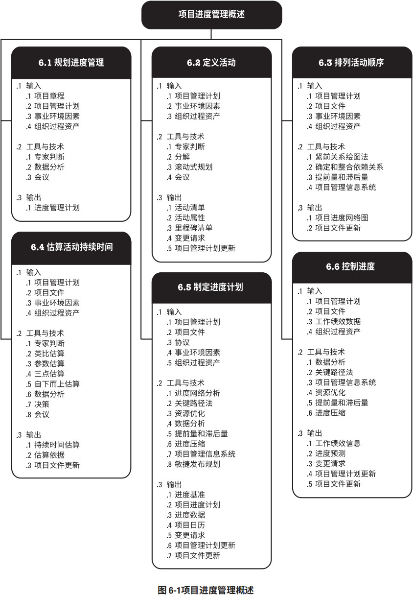
项目进度管理的核心概念
项目进度计划提供详尽的计划，说明项目如何以及何时交付项目范围中定义的产品、服务和成果，是一种用于沟通和管理相关方期望的工具，为绩效报告提供了依据。
项目管理团队选择进度计划方法，例如关键路径法或敏捷方法。之后，项目管理团队将项目特定数据，如活动、计划日期、持续时间、资源、依赖关系和制约因素等输入进度计划编制工具，以创建项目进度模型。这件工作的成果就是项目进度计划。图 6-2 是进度计划工作的概览，展示如何结合进度计划编制方法、编制工具及项目进度管理各过程的输出来创建进度模型。
在小型项目中，定义活动、排列活动顺序、估算活动持续时间及制定进度模型等过程之间的联系非常密切，以至于可视为一个过程，能够由一个人在较短时间内完成。但本章仍然把这些过程分开介绍，因为每个过程所用的工具和技术各不相同。有关某些过程的更详细的描述，请参见《进度计划实践标准》[2]。
在可能的情况下，应在整个项目期间保持项目详细进度计划的灵活性，使其可以随着知识的获得、对风险理解的加深，以及增值活动的设计而调整。
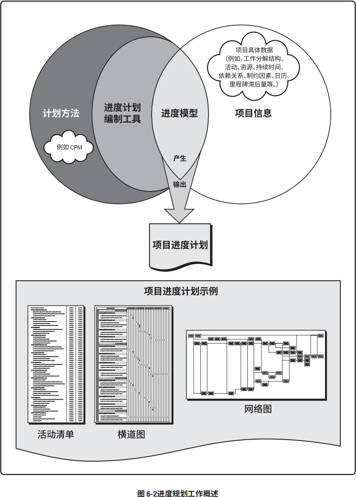
项目进度管理的发展趋势和新兴实践
全球市场瞬息万变，竞争激烈，具有很高的不确定性和不可预测性，很难定义长期范围，因此，为应对环境变化，根据具体情景有效采用和裁剪开发实践就日益重要。适应型规划虽然制定了计划，但也意识到工作开始之后，优先级可能发生改变，需要修改计划以反映新的优先级。
有关项目进度计划方法的新兴实践包括（但不限于）：
具有未完项的迭代型进度计划
这是一种基于适应型生命周期的滚动式规划，例如敏捷的产品开发方法。这种方法将需求记录在用户故事中，然后在建造之前按优先级排序并优化用户故事，最后在规定的时间盒内开发产品功能。这一方法通常用于向客户交付增量价值，或多个团队并行开发大量内部关联较小的功能。适应型生命周期在产品开发中的应用越来越普遍，很多项目都采用这种进度计划方法。这种方法的好处在于，它允许在整个开发生命周期期间进行变更。
按需进度计划
这种方法通常用于看板体系，基于制约理论和来自精益生产的拉动式进度计划概念，根据团队的交付能力来限制团队正在开展的工作。按需进度计划方法不依赖于以前为产品开发或产品增量制定的进度计划，而是在资源可用时立即从未完项和工作序列中提取出来开展。按需进度计划方法经常用于此类项目：在运营或持续环境中以增量方式研发产品，其任务可以被设计成相对类似的规模和范围，或者可以按规模和范围进行组合的工作。按需进度计划方法通常用于产品在运营和维护环境下以增量方式演进，且任务的规模或范围相对类似，或者，可以按照规模或范围对任务进行组合的项目。
裁剪考虑因素
由于每个项目都是独特的，因此项目经理可能需要裁剪项目进度管理过程。裁剪时应考虑的因素包括（但不限于）：
- 生命周期方法。哪种生命周期方法最适合制定详细的进度计划？
- 资源可用性。影响资源可持续时间的因素是什么（如可用资源与其生产效率之间的相关性）？
- 项目维度。项目复杂性、技术不确定性、产品新颖度、速度或进度跟踪（如挣值、完成百分比、“红黄绿”停止信号灯指示）如何影响预期的控制水平？
- 技术支持。是否采用技术来制定、记录、传递、接收和存储项目进度模型的信息以及是否易于获取？
有关进度计划的更多信息，参阅《进度计划实践标准》[16]。
关于敏捷/适应型环境的考虑因素
适应型方法采用短周期来开展工作、审查结果，并在必要时做出调整。这些周期可针对方法和可交付成果的适用性提供快速反馈，通常表现为迭代型进度计划和拉动式按需进度计划，具体参见“项目进度管理的发展趋势和新兴实践”一节。
在大型组织中，可能同时存在小规模项目和大规模举措，需要制定长期路线图，通过规模参数（如团队规模、地理分布、法规合规性、组织复杂性和技术复杂性）来管理这些项目集。为管理大规模的、全企业系统的、完整的交付生命周期，可能需要采用一系列技术，包括预测型方法、适应型方法或两种方法的混合。组织还可能需要结合几种核心方法，或采用已实践过的方法，并采纳来自传统技术的一些原则和实践。
无论是采用预测型开发生命周期来管理项目，还是在适应型环境下管理项目，项目经理的角色都不变。但是，要成功实施适应型方法，项目经理需要了解如何高效使用相关的工具和技术。
6.1 规划进度管理
规划进度管理是为规划、编制、管理、执行和控制项目进度而制定政策、程序和文档的过程。本过程的主要作用是，为如何在整个项目期间管理项目进度提供指南和方向。本过程仅开展一次或仅在项目的预定义点开展。图 6-3描述本过程的输入、工具与技术和输出。图 6-4 是本过程的数据流程图。
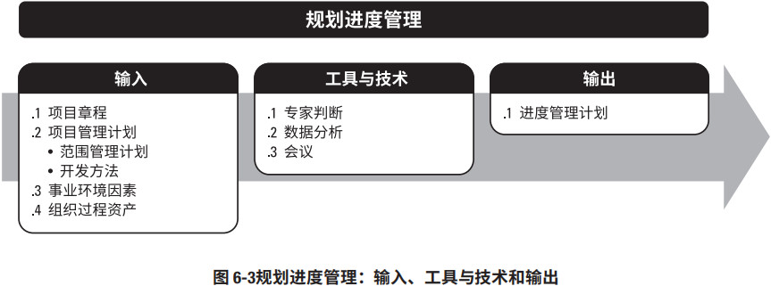
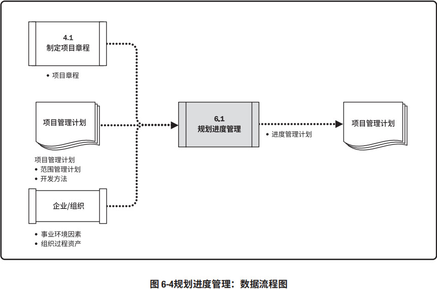
6.1.1 规划进度管理：输入
6.1.1.1 项目章程
见 4.1.3.1 节。项目章程中规定的总体里程碑进度计划会影响项目的进度管理。
6.1.1.2 项目管理计划
见 4.2.3.1 节。项目管理计划组件包括（但不限于）：
- 范围管理计划。见 5.1.3.1 节。范围管理计划描述如何定义和制定范围，并提供有关如何制定进度计划的信息。
- 开发方法。见 4.2.3.1 节。产品开发方法有助于定义进度计划方法、估算技术、进度计划编制工具以及用来控制进度的技术。
6.1.1.3 事业环境因素
能够影响规划进度管理过程的事业环境因素包括（但不限于）：
- 组织文化和结构；
- 团队资源可用性、技能以及物质资源可用性；
- 进度计划软件；
- 指南和标准，用于裁剪组织标准过程和程序以满足项目的特定要求；
- 商业数据库，如标准化的估算数据。
6.1.1.4 组织过程资产
能够影响规划进度管理过程的组织过程资产包括（但不限于）：
- 历史信息和经验教训知识库；
- 现有与制定进度计划以及管理和控制进度相关的正式和非正式的政策、程序和指南；
- 模板和表格；
- 监督和报告工具。
6.1.2 规划进度管理：工具与技术
6.1.2.1 专家判断
见 4.1.2.1 节。应征求具备专业知识或在以往类似项目中接受过相关培训的个人或小组的意见：
- 进度计划的编制、管理和控制；
- 进度计划方法（如预测型或适应型生命周期）；
- 进度计划软件；
- 项目所在的特定行业。
6.1.2.2 数据分析
适用于本过程的数据分析技术包括（但不限于）备选方案分析。备选方案分析可包括确定采用哪些进度计划方法，以及如何将不同方法整合到项目中；此外，它还可以包括确定进度计划的详细程度、滚动式规划的持续时间，以及审查和更新频率。管理进度所需的计划详细程度与更新计划所需的时间量之间的平衡，应针对各个项目具体而言。
6.1.2.3 会议
项目团队可能举行规划会议来制定进度管理计划。参会人员可能包括项目经理、项目发起人、选定的项目团队成员、选定的相关方、进度计划或执行负责人，以及其他必要人员。
6.1.3 规划进度管理：输出
6.1.3.1 进度管理计划
进度管理计划是项目管理计划的组成部分，为编制、监督和控制项目进度建立准则和明确活动。根据项目需要，进度管理计划可以是正式或非正式的，非常详细或高度概括的，其中应包括合适的控制临界值。
进度管理计划会规定：
- 项目进度模型制定。需要规定用于制定项目进度模型的进度规划方法论和工具。
- 进度计划的发布和迭代长度。使用适应型生命周期时，应指定固定时间的发布时段、阶段和迭代。固定时间段指项目团队稳定地朝着目标前进的持续时间，它可以推动团队先处理基本功能，然后在时间允许的情况下再处理其他功能，从而尽可能减少范围蔓延。
- 准确度。准确度定义了需要规定活动持续时间估算的可接受区间，以及允许的应急储备数量。
- 计量单位。需要规定每种资源的计量单位，例如，用于测量时间的人时数、人天数或周数，用于计量数量的米、升、吨、千米或立方码。
- 组织程序链接。工作分解结构（WBS，见 5.4 节）为进度管理计划提供了框架，保证了与估算及相应进度计划的协调性。
- 项目进度模型维护。需要规定在项目执行期间，将如何在进度模型中更新项目状态，记录项目进展。
- 控制临界值。可能需要规定偏差临界值，用于监督进度绩效。它是在需要采取某种措施前，允许出现的最大差异。临界值通常用偏离基准计划中的参数的某个百分数来表示。
- 绩效测量规则。需要规定用于绩效测量的挣值管理（EVM）规则或其他测量规则。例如，进度管理计划可能规定：
- 确定完成百分比的规则；
- EVM 技术，如基准法、固定公式法、完成百分比法等。更多信息，参阅《挣值管理实践标准》[17]；
- 进度绩效测量指标，如进度偏差（SV）和进度绩效指数（SPI），用来评价偏离原始进度基准的程度。
- 报告格式。需要规定各种进度报告的格式和编制频率。
6.2 定义活动
定义活动是识别和记录为完成项目可交付成果而须采取的具体行动的过程。本过程的主要作用是，将工作包分解为进度活动，作为对项目工作进行进度估算、规划、执行、监督和控制的基础。本过程需要在整个项目期间开展。图 6-5 描述本过程的输入、工具与技术和输出，图 6-6 是本过程的数据流程图。
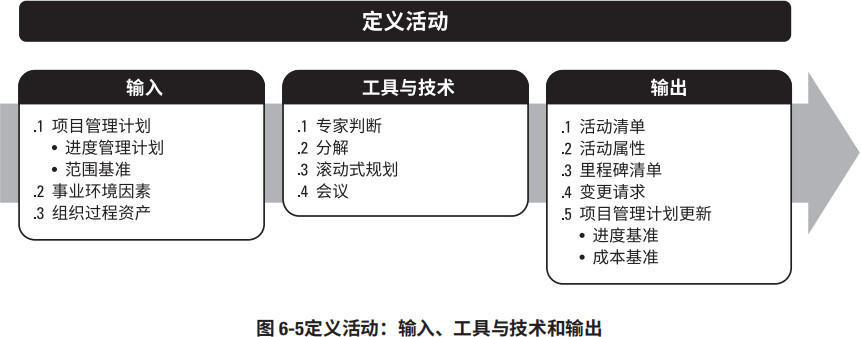
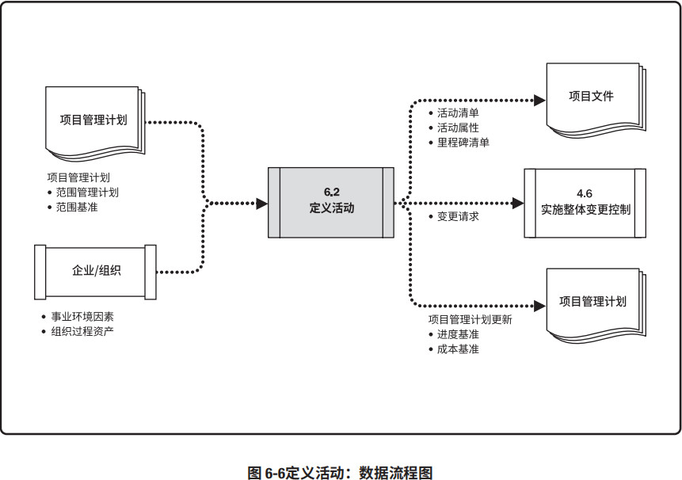
6.2.1 定义活动：输入
6.2.1.1 项目管理计划
见 4.2.3.1 节。项目管理计划组件包括（但不限于）：
- 进度管理计划。见 6.1.3.1 节。进度管理计划定义进度计划方法、滚动式规划的持续时间，以及管理工作所需的详细程度。
- 范围基准。见 5.4.3.1 节。在定义活动时，需明确考虑范围基准中的项目 WBS、可交付成果、制约因素和假设条件。
6.2.1.2 事业环境因素
影响定义活动过程的事业环境因素包括（但不限于）：
- 组织文化和结构；
- 商业数据库中发布的商业信息；
- 项目管理信息系统 (PMIS)。
6.2.1.3 组织过程资产
能够影响定义活动过程的组织过程资产包括（但不限于）：
- 经验教训知识库，其中包含以往类似项目的活动清单等历史信息；
- 标准化的流程；
- 以往项目中包含标准活动清单或部分活动清单的模板；
- 现有与活动规划相关的正式和非正式的政策、程序和指南，如进度规划方法论，在编制活动定义时应考虑这些因素。
6.2.2 定义活动：工具与技术
6.2.2.1 专家判断
见 4.1.2.1 节。应征求了解以往类似项目和当前项目的个人或小组的专业意见。
6.2.2.2 分解
见 5.4.2.2 节。分解是一种把项目范围和项目可交付成果逐步划分为更小、更便于管理的组成部分的技术。活动表示完成工作包所需的投入。定义活动过程的最终输出是活动而不是可交付成果，可交付成果是创建 WBS 过程（见 5.4 节）的输出。
WBS、WBS 词典和活动清单可依次或同时编制，其中 WBS 和 WBS 词典是制定最终活动清单的基础。WBS 中的每个工作包都需分解成活动，以便通过这些活动来完成相应的可交付成果。让团队成员参与分解过程，有助于得到更好、更准确的结果。
6.2.2.3 滚动式规划
滚动式规划是一种迭代式的规划技术，即详细规划近期要完成的工作，同时在较高层级上粗略规划远期工作。它是一种渐进明细的规划方式，适用于工作包、规划包以及采用敏捷或瀑布式方法的发布规划。因此，在项目生命周期的不同阶段，工作的详细程度会有所不同。在早期的战略规划阶段，信息尚不够明确，工作包只能分解到已知的详细水平；而后，随着了解到更多的信息，近期即将实施的工作包就可以分解到具体的活动。
6.2.2.4 会议
会议可以是面对面或虚拟会议，正式或非正式会议。参会者可以是团队成员或主题专家，目的是定义完成工作所需的活动。
6.2.3 定义活动：输出
6.2.3.1 活动清单
活动清单包含项目所需的进度活动。对于使用滚动式规划或敏捷技术的项目，活动清单会在项目进展过程中得到定期更新。活动清单包括每个活动的标识及工作范围详述，使项目团队成员知道需要完成什么工作。
6.2.3.2 活动属性
活动属性是指每项活动所具有的多重属性，用来扩充对活动的描述，活动属性随时间演进。在项目初始阶段，活动属性包括唯一活动标识 (ID)、WBS 标识和活动标签或名称；在活动属性编制完成时，活动属性可能包括活动描述、紧前活动、紧后活动、逻辑关系、提前量和滞后量（见 6.3.2.3 节）、资源需求、强制日期、制约因素和假设条件。活动属性可用于识别开展工作的地点、编制开展活动的项目日历，以及相关的活动类型。活动属性还可用于编制进度计划。根据活动属性，可在报告中以各种方式对计划进度活动进行选择、排序和分类。
6.2.3.3 里程碑清单
里程碑是项目中的重要时点或事件，里程碑清单列出了所有项目里程碑，并指明每个里程碑是强制性的（如合同要求的）还是选择性的（如根据历史信息确定的）。里程碑的持续时间为零，因为它们代表的是一个重要时间点或事件。
6.2.3.4 变更请求
见 4.3.3.4 节。一旦定义项目的基准后，在将可交付成果渐进明细为活动的过程中，可能会发现原本不属于项目基准的工作，这样就会提出变更请求。在这情况下，应该通过实施整体变更控制过程（见 4.6 节）对变更请求进行审查和处理。
6.2.3.5 项目管理计划更新
项目管理计划的任何变更都以变更请求的形式提出，且通过组织的变更控制过程进行处理。可能需要变更请求的项目管理计划组成部分包括（但不限于）：
- 进度基准。见 6.5.3.1 节。在整个项目期间，工作包逐渐细化为活动。在这个过程中可能会发现原本不属于项目基准的工作，从而需要修改作为进度基准一部分的交付日期或其他重要的进度里程碑。
- 成本基准。见 7.3.3.1 节。在针对进度活动的变更获得批准后，需要对成本基准做出相应的变更。
6.3 排列活动顺序
排列活动顺序是识别和记录项目活动之间的关系的过程，本过程的主要作用是定义工作之间的逻辑顺序，以便在既定的所有项目制约因素下获得最高的效率。本过程需要在整个项目期间开展。图 6-7 描述本过程的输入、工具与技术和输出，图 6-8 是本过程的数据流程图。
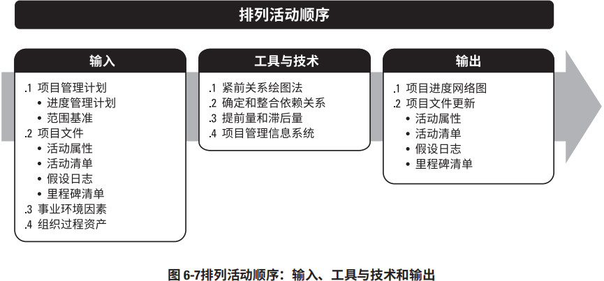
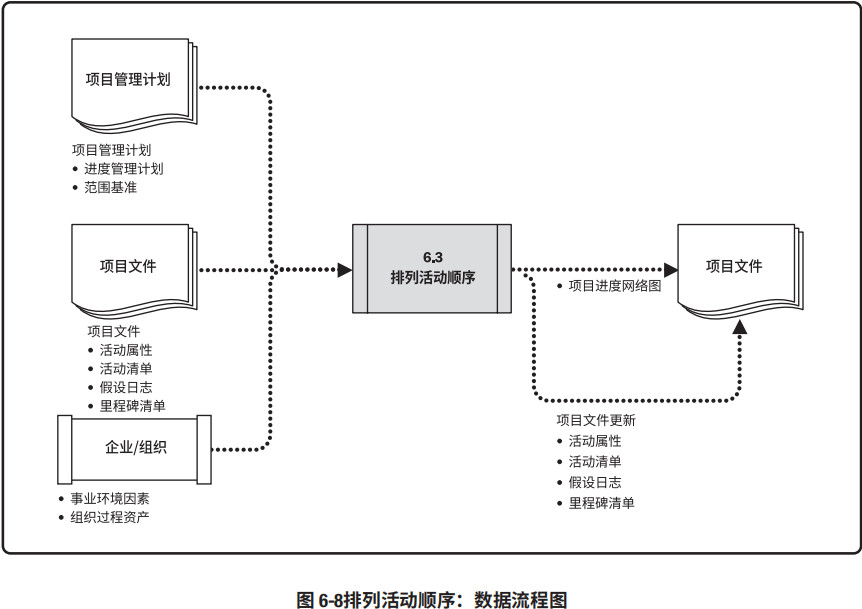
除了首尾两项，每项活动都至少有一项紧前活动和一项紧后活动，并且逻辑关系适当。通过设计逻辑关系来创建一个切实的项目进度计划，可能有必要在活动之间使用提前量或滞后量，使项目进度计划更为切实可行；可以使用项目管理软件、手动技术或自动技术，来排列活动顺序。排列活动顺序过程旨在将项目活动列表转化为图表，作为发布进度基准的第一步。
6.3.1 排列活动顺序：输入
6.3.1.1 项目管理计划
见 4.2.3.1 节。项目管理计划组件包括（但不限于）：
- 进度管理计划。见 6.1.3.1 节。进度管理计划规定了排列活动顺序的方法和准确度，以及所需的其他标准。
- 范围基准。见 5.4.3.1 节。在排列活动顺序时，需明确考虑范围基准中的项目 WBS、可交付成果、制约因素和假设条件。
6.3.1.2 项目文件
可作为本过程输入的项目文件包括（但不限于）：
- 活动属性。见 6.2.3.2 节。活动属性中可能描述了事件之间的必然顺序或确定的紧前或紧后关系，以及定义的提前量与滞后量，和活动之间的逻辑关系。
- 活动清单。见 6.2.3.1 节。活动清单列出了项目所需的、待排序的全部进度活动，这些活动的依赖关系和其他制约因素会对活动排序产生影响。
- 假设日志。见 4.1.3.2 节。假设日志所记录的假设条件和制约因素可能影响活动排序的方式、活动之间的关系，以及对提前量和滞后量的需求，并且有可能生成一个会影响项目进度的风险。
- 里程碑清单。见 6.2.3.3 节。里程碑清单中可能已经列出特定里程碑的实现日期，这可能影响活动排序的方式。
6.3.1.3 事业环境因素
能够影响排列活动顺序过程的事业环境因素包括（但不限于）：
- 政府或行业标准；
- 项目管理信息系统（PMIS）；
- 进度规划工具；
- 组织的工作授权系统。
6.3.1.4 组织过程资产
能够影响排列活动顺序过程的组织过程资产包括（但不限于）：
- 项目组合与项目集规划，以及项目之间的依赖关系与关联；
- 现有与活动规划相关的正式和非正式的政策、程序和指南，如进度计划方法论，在确定逻辑关系时应考虑这些因素；
- 有助于加快项目活动网络图编制的各种模板；模板中也会包括有助于排列活动顺序的，与活动属性有关的信息；
- 经验教训知识库，其中包含有助于优化排序过程的历史信息。
6.3.2 排列活动顺序：工具与技术
6.3.2.1 紧前关系绘图法
紧前关系绘图法（PDM）是创建进度模型的一种技术，用节点表示活动，用一种或多种逻辑关系连接活动，以显示活动的实施顺序。
PDM 包括四种依赖关系或逻辑关系。紧前活动是在进度计划的逻辑路径中，排在非开始活动前面的活动。紧后活动是在进度计划的逻辑路径中，排在某个活动后面的活动。这些关系的定义如下，并如图 6-9 所示：
- 完成到开始（FS）。只有紧前活动完成，紧后活动才能开始的逻辑关系。例如，只有完成装配 PC 硬件（紧前活动），才能开始在 PC 上安装操作系统（紧后活动）。
- 完成到完成（FF）。只有紧前活动完成，紧后活动才能完成的逻辑关系。例如，只有完成文件的编写（紧前活动），才能完成文件的编辑（紧后活动）。
- 开始到开始（SS）。只有紧前活动开始，紧后活动才能开始的逻辑关系。例如，开始地基浇灌（紧后活动）之后，才能开始混凝土的找平（紧前活动）。
- 开始到完成（SF）。只有紧前活动开始，紧后活动才能完成的逻辑关系。例如，只有启动新的应付账款系统（紧前活动），才能关闭旧的应付账款系统（紧后活动）。
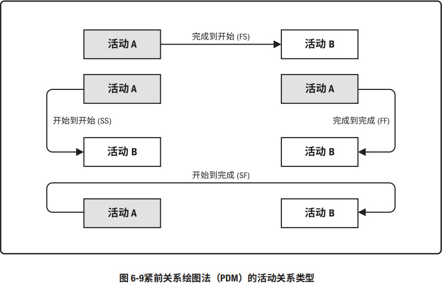
在 PDM 图中，FS 是最常用的逻辑关系类型；SF 关系则很少使用，为了保持 PDM 四种逻辑关系类型的完整性，这里也将 SF 列出。
虽然两个活动之间可能同时存在两种逻辑关系（例如 SS 和 FF），但不建议相同的活动之间存在多种关系。因此必须做出选出影响最大关系的决定。此外也不建议采用闭环的逻辑关系。
6.3.2.2 确定和整合依赖关系
如下所述，依赖关系可能是强制或选择的，内部或外部的。这四种依赖关系可以组合成强制性外部依赖关系、强制性内部依赖关系、选择性外部依赖关系或选择性内部依赖关系。
强制性依赖关系
强制性依赖关系是法律或合同要求的或工作的内在性质决定的依赖关系，强制性依赖关系往往与客观限制有关。例如，在建筑项目中，只有在地基建成后，才能建立地面结构；在电子项目中，必须先把原型制造出来，然后才能对其进行测试。强制性依赖关系又称硬逻辑关系或硬依赖关系，技术依赖关系可能不是强制性的。在活动排序过程中，项目团队应明确哪些关系是强制性依赖关系，不应把强制性依赖关系和进度计划编制工具中的进度制约因素相混淆。
选择性依赖关系
选择性依赖关系有时又称首选逻辑关系、优先逻辑关系或软逻辑关系。即便还有其他依赖关系可用，选择性依赖关系应基于具体应用领域的最佳实践或项目的某些特殊性质对活动顺序的要求来创建。例如，根据普遍公认的最佳实践，在建造期间，应先完成卫生管道工程，才能开始电气工程。这个顺序并不是强制性要求，两个工程可以同时（并行）开展工作，但如按先后顺序进行可以降低整体项目风险。应该对选择性依赖关系进行全面记录，因为它们会影响总浮动时间，并限制后续的进度安排。如果打算进行快速跟进，则应当审查相应的选择性依赖关系，并考虑是否需要调整或去除。在排列活动顺序过程中，项目团队应明确哪些依赖关系属于选择性依赖关系。
外部依赖关系
外部依赖关系是项目活动与非项目活动之间的依赖关系，这些依赖关系往往不在项目团队的控制范围内。例如，软件项目的测试活动取决于外部硬件的到货；建筑项目的现场准备，可能要在政府的环境听证会之后才能开始。在排列活动顺序过程中，项目管理团队应明确哪些依赖关系属于外部依赖关系。
内部依赖关系
内部依赖关系是项目活动之间的紧前关系，通常在项目团队的控制之中。例如，只有机器组装完毕，团队才能对其测试，这是一个内部的强制性依赖关系。在排列活动顺序过程中，项目管理团队应明确哪些依赖关系属于内部依赖关系。
6.3.2.3 提前量和滞后量
提前量是相对于紧前活动，紧后活动可以提前的时间量。例如，在新办公大楼建设项目中，绿化施工可以在尾工清单编制完成前 2 周开始，这就是带 2 周提前量的完成到开始的关系，如图 6-10 所示。在进度计划软件中，提前量往往表示为负滞后量。
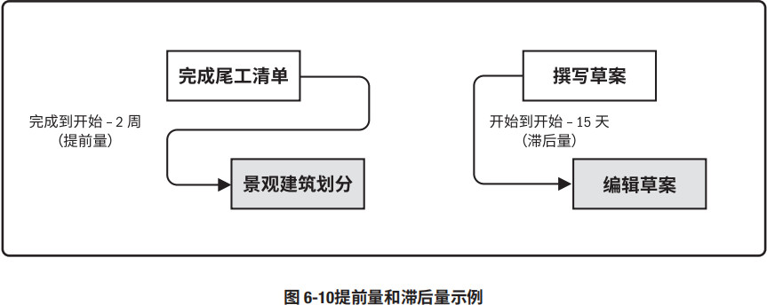
滞后量是相对于紧前活动，紧后活动需要推迟的时间量。例如，对于一个大型技术文档，编写小组可以在编写工作开始后 15 天，开始编辑文档草案，这就是带 15 天滞后量的开始到开始关系，如图 6-10 所示。在图 6-11 的项目进度网络图中，活动 H 和活动 I 之间就有滞后量，表示为 SS+10（带 10 天滞后量的开始到开始关系），虽然图中并没有用精确的时间刻度来表示滞后的量值。
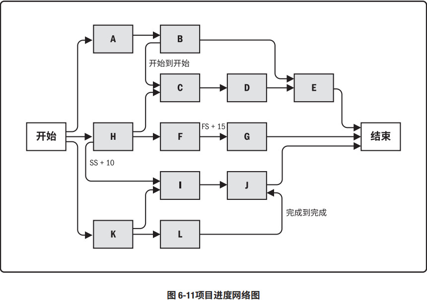
项目管理团队应该明确哪些依赖关系中需要加入提前量或滞后量，以便准确地表示活动之间的逻辑关系。提前量和滞后量的使用不能替代进度逻辑关系，而且持续时间估算中不包括任何提前量或滞后量，同时还应该记录各种活动及与之相关的假设条件。
6.3.2.4 项目管理信息系统 (PMIS)
见 4.3.2.2 节。项目管理信息系统包括进度计划软件；这些软件有助于规划、组织和调整活动顺序，插入逻辑关系、提前和滞后值，以及区分不同类型的依赖关系。
6.3.3 排列活动顺序：输出
6.3.3.1 项目进度网络图
项目进度网络图是表示项目进度活动之间的逻辑关系（也叫依赖关系）的图形。图 6-11 是项目进度网络图的一个示例。项目进度网络图可手工或借助项目管理软件来绘制，可包括项目的全部细节，也可只列出一项或多项概括性活动。项目进度网络图应附有简要文字描述，说明活动排序所使用的基本方法。在文字描述中，还应该对任何异常的活动序列做详细说明。
带有多个紧前活动的活动代表路径汇聚，而带有多个紧后活动的活动则代表路径分支。带汇聚和分支的活动受到多个活动的影响或能够影响多个活动，因此存在更大的风险。I 活动被称为“路径汇聚”，因为它拥有多个紧前活动，而 K 活动被称为“路径分支”，因为它拥有多个紧后活动。
6.3.3.2 项目文件更新
可在本过程更新的项目文件包括（但不限于）：
- 活动属性。见 6.2.3.2 节。活动属性中可能描述了事件之间的必然顺序或确定的紧前或紧后关系，以及定义的提前量与滞后量，和活动之间的逻辑关系。
- 活动清单。见 6.2.3.1 节。在排列活动顺序时，活动清单可能会受到项目活动关系变更的影响。
- 假设日志。见 4.1.3.2 节。根据活动的排序、关系确定以及提前量和滞后量，可能需要更新假设日志中的假设条件和制约因素，并且有可能生成一个会影响项目进度的风险。
- 里程碑清单。见 6.2.3.3 节。在排列活动顺序时，特定里程碑的计划实现日期可能会受到项目活动关系变更的影响。
6.4 估算活动持续时间
估算活动持续时间是根据资源估算的结果，估算完成单项活动所需工作时段数的过程。本过程的主要作用是，确定完成每个活动所需花费的时间量。本过程需要在整个项目期间开展。图 6-12 描述本过程的输入、工具与技术和输出。图 6-13 是本过程的数据流程图。
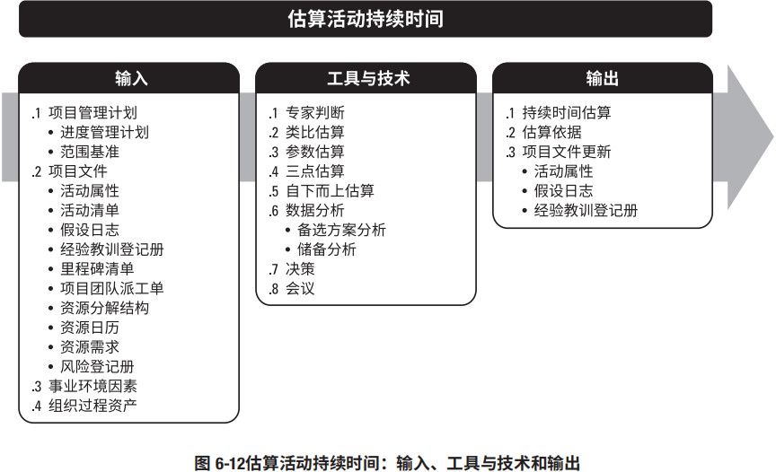
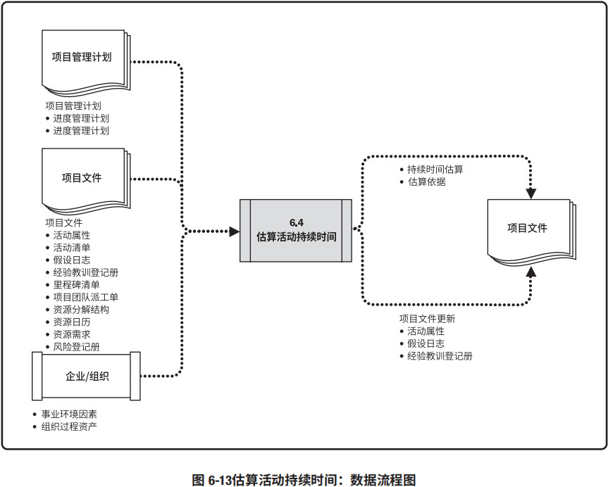
估算活动持续时间依据的信息包括：工作范围、所需资源类型与技能水平、估算的资源数量和资源日历，而可能影响持续时间估算的其他因素包括对持续时间受到的约束、相关人力投入、资源类型（如固定持续时间、固定人力投入或工作、固定资源数量）以及所采用的进度网络分析技术。应该由项目团队中最熟悉具体活动的个人或小组提供持续时间估算所需的各种输入，对持续时间的估算也应该渐进明细，取决于输入数据的数量和质量。例如，在工程与设计项目中，随着数据越来越详细，越来越准确，持续时间估算的准确性和质量也会越来越高。
在本过程中，应该首先估算出完成活动所需的工作量和计划投入该活动的资源数量，然后结合项目日历和资源日历，据此估算出完成活动所需的工作时段数（活动持续时间）。在许多情况下，预计可用的资源数量以及这些资源的技能熟练程度可能会决定活动的持续时间，更改分配到活动的主导性资源通常会影响持续时间，但这不是简单的“直线”或线性关系。有时候，因为工作的特性（即受到持续时间的约束、相关人力投入或资源数量），无论资源分配如何（如 24 小时应力测试），都需要花预定的时间才能完成工作。估算持续时间时需要考虑的其他因素包括：
收益递减规律
在保持其他因素不变的情况下，增加一个用于确定单位产出所需投入的因素（如资源）会最终达到一个临界点，在该点之后的产出或输出会随着增加这个因素而递减。
资源数量
增加资源数量，使其达到初始数量的两倍不一定能缩短一半的时间，因为这样做可能会因风险而造成持续时间增加；在某些情况下，如果增加太多活动资源，可能会因知识传递、学习曲线、额外合作等其他相关因素而造成持续时间增加。
技术进步
在确定持续时间估算时，这个因素也可能发挥重要作用。例如，通过采购最新技术，制造工厂可以提高产量，而这可能会影响持续时间和资源需求。
员工激励
项目经理还需要了解“学生综合征”（即拖延症）和帕金森定律，前者指出，人们只有在最后一刻，即快到期限时才会全力以赴；后者指出，只要还有时间，工作就会不断扩展，直到用完所有的时间。
应该把活动持续时间估算所依据的全部数据与假设都记录在案。
6.4.1 估算活动持续时间：输入
6.4.1.1 项目管理计划
见 4.2.3.1 节。项目管理计划组件包括（但不限于）：
- 进度管理计划。见 6.1.3.1 节。进度管理计划规定了用于估算活动持续时间的方法和准确度，以及所需的其他标准。
- 范围基准。见 5.4.3.1 节。范围基准包含 WBS 词典，后者包括可能影响人力投入和持续时间估算的技术细节。
6.4.1.2 项目文件
可作为本过程输入的项目文件包括（但不限于）：
- 活动属性。见 6.2.3.2 节。活动属性可能描述了确定的紧前或紧后关系、定义的提前量与滞后量以及可能影响持续时间估算的活动之间的逻辑关系。
- 活动清单。见 6.2.3.1 节。活动清单列出了项目所需的、待估算的全部进度活动，这些活动的依赖关系和其他制约因素会对持续时间估算产生影响。
- 假设日志。见 4.1.3.2 节。假设日志所记录的假设条件和制约因素有可能生成一个会影响项目进度的风险。
- 经验教训登记册。见 4.4.3.1 节。与人力投入和持续时间估算有关的经验教训登记册可以运用到项目后续阶段，以提高人力投入和持续时间估算的准确性。
- 里程碑清单。见 6.2.3.3 节。里程碑清单中可能已经列出特定里程碑的计划实现日期，这可能影响持续时间估算。
- 项目团队派工单。见 9.3.3.1 节。将合适的人员分派到团队，为项目配备人员。
- 资源分解结构。见 9.2.3.3 节。资源分解结构按照资源类别和资源类型，提供了已识别资源的层级结构。
- 资源日历。见 9.2.1.2 节。资源日历中的资源可用性、资源类型和资源性质，都会影响进度活动的持续时间。资源日历规定了在项目期间特定的项目资源何时可用及可用多久。
- 资源需求。见 9.2.3.1 节。估算的活动资源需求会对活动持续时间产生影响。对于大多数活动来说，所分配的资源能否达到要求，将对其持续时间有显著影响。例如，向某个活动新增资源或分配低技能资源，就需要增加沟通、培训和协调工作，从而可能导致活动效率或生产率下降，由此需要估算更长的持续时间。
- 风险登记册。见 11.2.3.1 节。单个项目风险可能影响资源的选择和可用性。风险登记册的更新包括在项目文件更新中，见“规划风险应对” (见 11.5.3.2 节) 一节。
6.4.1.3 事业环境因素
能够影响估算活动持续时间过程的事业环境因素包括（但不限于）：
- 持续时间估算数据库和其他参考数据；
- 生产率测量指标；
- 发布的商业信息；
- 团队成员的所在地。
6.4.1.4 组织过程资产
能够影响估算活动持续时间过程的组织过程资产包括（但不限于）：
- 关于持续时间的历史信息；
- 项目日历；
- 估算政策；
- 进度规划方法论；
- 经验教训知识库。
6.4.2 估算活动持续时间：工具与技术
6.4.2.1 专家判断
见 4.1.2.1 节。应征求具备以下专业知识或接受过相关培训的个人或小组的意见：
- 进度计划的编制、管理和控制；
- 有关估算的专业知识；
- 学科或应用知识。
6.4.2.2 类比估算
类比估算是一种使用相似活动或项目的历史数据，来估算当前活动或项目的持续时间或成本的技术。类比估算以过去类似项目的参数值（如持续时间、预算、规模、重量和复杂性等）为基础，来估算未来项目的同类参数或指标。在估算持续时间时，类比估算技术以过去类似项目的实际持续时间为依据，来估算当前项目的持续时间。这是一种粗略的估算方法，有时需要根据项目复杂性方面的已知差异进行调整，在项目详细信息不足时，就经常使用类比估算来估算项目持续时间。
相对于其他估算技术，类比估算通常成本较低、耗时较少，但准确性也较低。类比估算可以针对整个项目或项目中的某个部分进行，或可以与其他估算方法联合使用。如果以往活动是本质上而不是表面上类似，并且从事估算的项目团队成员具备必要的专业知识，那么类比估算就最为可靠。
6.4.2.3 参数估算
参数估算是一种基于历史数据和项目参数，使用某种算法来计算成本或持续时间的估算技术。它是指利用历史数据之间的统计关系和其他变量（如建筑施工中的平方英尺），来估算诸如成本、预算和持续时间等活动参数。
把需要实施的工作量乘以完成单位工作量所需的工时，即可计算出持续时间。例如，对于设计项目，将图纸的张数乘以每张图纸所需的工时；或者对于电缆铺设项目，将电缆的长度乘以铺设每米电缆所需的工时。如果所用的资源每小时能够铺设 25 米电缆，那么铺设 1000 米电缆的持续时间是 40 小时（1000 米除以 25 米/小时）。
参数估算的准确性取决于参数模型的成熟度和基础数据的可靠性。且参数进度估算可以针对整个项目或项目中的某个部分，并可以与其他估算方法联合使用。
6.4.2.4 三点估算
通过考虑估算中的不确定性和风险，可以提高持续时间估算的准确性。使用三点估算有助于界定活动持续时间的近似区间：
- 最可能时间 (tM)。基于最可能获得的资源、最可能取得的资源生产率、对资源可用时间的现实预计、资源对其他参与者的可能依赖关系及可能发生的各种干扰等，所估算的活动持续时间。
- 最乐观时间 (tO)。基于活动的最好情况所估算的活动持续时间。
- 最悲观时间 (tP)。基于活动的最差情况所估算的持续时间。
基于持续时间在三种估算值区间内的假定分布情况，可计算期望持续时间 tE。一个常用公式为三角分布：
tE = (tO + tM + tP) / 3.
历史数据不充分或使用判断数据时，使用三角分布，基于三点的假定分布估算出期望持续时间，并说明期望持续时间的不确定区间。
6.4.2.5 自下而上估算
自下而上估算是一种估算项目持续时间或成本的方法，通过从下到上逐层汇总 WBS 组成部分的估算而得到项目估算。如果无法以合理的可信度对活动持续时间进行估算，则应将活动中的工作进一步细化，然后估算具体的持续时间，接着再汇总这些资源需求估算，得到每个活动的持续时间。活动之间可能存在或不存在会影响资源利用的依赖关系；如果存在，就应该对相应的资源使用方式加以说明，并记录在活动资源需求中。
6.4.2.6 数据分析
可用作本过程的数据分析技术包括（但不限于）：
备选方案分析
备选方案分析用于比较不同的资源能力或技能水平、进度压缩技术（见 6.5.2.6 节）、不同工具（手动和自动），以及关于资源的创建、租赁和购买决策。这有助于团队权衡资源、成本和持续时间变量，以确定完成项目工作的最佳方式。
储备分析
储备分析用于确定项目所需的应急储备量和管理储备。在进行持续时间估算时，需考虑应急储备（有时称为“进度储备”），以应对进度方面的不确定性。应急储备是包含在进度基准中的一段持续时间，用来应对已经接受的已识别风险。应急储备与“已知 — 未知”风险相关，需要加以合理估算，用于完成未知的工作量。应急储备可取活动持续时间估算值的某一百分比或某一固定的时间段，亦可把应急储备从各个活动中剥离出来并汇总。随着项目信息越来越明确，可以动用、减少或取消应急储备，应该在项目进度文件中清楚地列出应急储备。
也可以估算项目进度管理所需要的管理储备量。管理储备是为管理控制的目的而特别留出的项目预算，用来应对项目范围中不可预见的工作。管理储备用来应对会影响项目的“未知-未知”风险，它不包括在进度基准中，但属于项目总持续时间的一部分。依据合同条款，使用管理储备可能需要变更进度基准。
6.4.2.7 决策
见 5.2.2.4 节。适用于本过程的决策技术包括（但不限于）投票。举手表决是从投票方法衍生出来的一种形式，经常用于敏捷项目中。采用这种技术时，项目经理会让团队成员针对某个决定示意支持程度，举拳头表示不支持，伸五个手指表示完全支持，伸出三个以下手指的团队成员有机会与团队讨论其反对意见。项目经理会不断进行举手表决，直到整个团队达成共识（所有人都伸出三个以上手指）或同意进入下一个决定。
6.4.2.8 会议
项目团队可能会召开会议来估算活动持续时间。如果采用敏捷方法，则有必要举行冲刺或迭代计划会议，以讨论按优先级排序的产品未完项（用户故事），并决定团队在下一个迭代中会致力于解决哪个未完项。然后团队将用户故事分解为按小时估算的底层级任务，然后根据团队在持续时间（迭代）方面的能力确认估算可行。该会议通常在迭代的第一天举行，参会者包括产品负责人、开发团队和项目经理，会议结果包括迭代未完项、假设条件、关注事项、风险、依赖关系、决定和行动。
6.4.3 估算活动持续时间：输出
6.4.3.1持续时间估算
持续时间估算是对完成某项活动、阶段或项目所需的工作时段数的定量评估，其中并不包括任何滞后量（见 6.3.2.3 节），但可指出一定的变动区间。例如：
- 2 周 ± 2 天，表明活动至少需要 8 天，最多不超过 12 天（假定每周工作 5 天）；
- 超过 3 周的概率为 15%，表明该活动将在 3 周内（含 3 周）完工的概率为 85%。
6.4.3.2 估算依据
持续时间估算所需的支持信息的数量和种类，因应用领域而异。不论其详细程度如何，支持性文件都应该清晰、完整地说明持续时间估算是如何得出的。
持续时间估算的支持信息可包括：
- 关于估算依据的文件（如估算是如何编制的）；
- 关于全部假设条件的文件；
- 关于各种已知制约因素的文件；
- 对估算区间的说明（如“±10%”），以指出预期持续时间的所在区间；
- 对最终估算的置信水平的说明；
- 有关影响估算的单个项目风险的文件。
6.4.3.3 项目文件更新
可在本过程更新的项目文件包括（但不限于）：
- 活动属性。见 6.2.3.2 节。本过程输出的活动持续时间估算将记录在活动属性中。
- 假设日志。见 4.1.3.2 节。这包括为估算持续时间而制定的假设条件，如资源的技能水平、可用性，以及估算依据，此外还记录了进度计划方法论和进度计划编制工具所带来的制约因素。
- 经验教训登记册。见 4.4.3.1 节。在更新经验教训登记册时，可以增加能够有效和高效地估算人力投入和持续时间的技术。
6.5 制定进度计划
制定进度计划是分析活动顺序、持续时间、资源需求和进度制约因素，创建进度模型，从而落实项目执行和监控的过程。本过程的主要作用是，为完成项目活动而制定具有计划日期的进度模型。本过程需要在整个项目期间开展。图 6-14 描述本过程的输入、工具与技术和输出，图 6-15 是本过程的数据流程图。
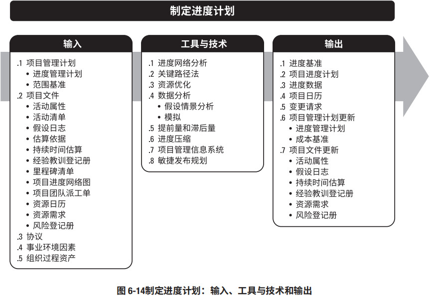
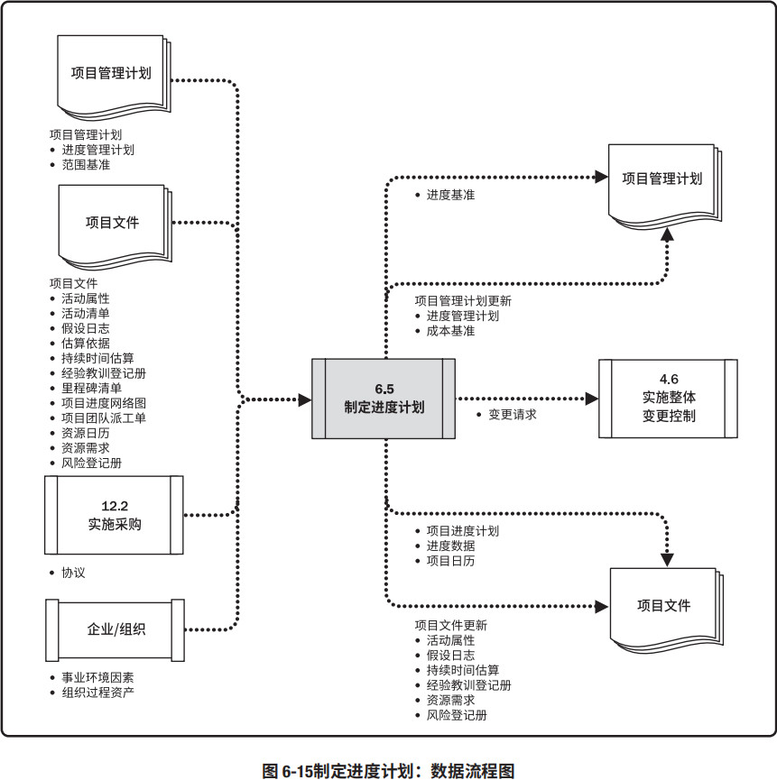
制定可行的项目进度计划是一个反复进行的过程。基于获取的最佳信息，使用进度模型来确定各项目活动和里程碑的计划开始日期和计划完成日期。编制进度计划时，需要审查和修正持续时间估算、资源估算和进度储备，以制定项目进度计划，并在经批准后作为基准用于跟踪项目进度。关键步骤包括定义项目里程碑、识别活动并排列活动顺序，以及估算持续时间。一旦活动的开始和完成日期得到确定，通常就需要由分配至各个活动的项目人员审查其被分配的活动。之后，项目人员确认开始和完成日期与资源日历没有冲突，也与其他项目或任务没有冲突，从而确认计划日期的有效性。最后分析进度计划，确定是否存在逻辑关系冲突，以及在批准进度计划并将其作为基准之前是否需要资源平衡。同时，需要修订和维护项目进度模型，确保进度计划在整个项目期间一直切实可行，见 6.7 节。
有关进度规划的更多信息，参阅《进度计划实践标准》。
6.5.1 制定进度计划：输入
6.5.1.1 项目管理计划
见 4.2.3.1 节。项目管理计划组件包括（但不限于）：
- 进度管理计划。见 6.1.3.1 节。进度管理计划规定了用于制定进度计划的进度计划编制方法和工具，以及推算进度计划的方法。
- 范围基准。见 5.4.3.1 节。范围说明书、WBS 和 WBS 词典包含了项目可交付成果的详细信息， 供创建进度模型时借鉴。
6.5.1.2 项目文件
可作为本过程输入的项目文件包括（但不限于）：
- 活动属性。见 6.2.3.2 节。活动属性提供了创建进度模型所需的细节信息。
- 活动清单。见 6.2.3.1 节。活动清单明确了需要在进度模型中包含的活动。
- 假设日志。见 4.1.3.2 节。假设日志所记录的假设条件和制约因素可能造成影响项目进度的单个项目风险。
- 估算依据。见 6.4.3.2 节。持续时间估算所需的支持信息的数量和种类，因应用领域而异。不论其详细程度如何，支持性文件都应该清晰、完整地说明持续时间估算是如何得出的。
- 持续时间估算。见 6.4.3.1 节。持续时间估算包括对完成某项活动所需的工作时段数的定量评估，用于进度计划的推算。
- 经验教训。见 4.4.3.1 节。与创建进度模型有关的经验教训登记册可以运用到项目后期阶段，以提高进度模型的有效性。
- 里程碑清单。见 6.2.3.3 节。里程碑清单列出特定里程碑的实现日期。
- 项目进度网络图。见 6.3.3.1 节。项目进度网络图中包含用于推算进度计划的紧前和紧后活动的逻辑关系。
- 项目团队派工单。见 9.3.3.1 节。项目团队派工单明确了分配到每个活动的资源。
- 资源日历。见 9.2.1.2 节。资源日历规定了在项目期间的资源可用性。
- 资源需求。见 9.2.3.1 节。活动资源需求明确了每个活动所需的资源类型和数量，用于创建进度模型。
- 风险登记册。见 11.2.3.1 节。风险登记册中的所有已识别的会影响进度模型的风险的详细信息及特征。进度储备则通过预期或平均风险影响程度，反映了与进度有关的风险信息。
6.5.1.3 协议
见 12.2.3.2 节。在制定如何执行项目工作以履行合同承诺的详细信息时，供应商为项目进度提供了输入。
6.5.1.4 事业环境因素
能够影响制定进度计划过程的事业环境因素包括（但不限于）：
- 政府或行业标准；
- 沟通渠道。
6.5.1.5 组织过程资产
能够影响制定进度计划过程的组织过程资产包括（但不限于）：
- 进度计划方法论，其中包括制定和维护进度模型时应遵循的政策；
- 项目日历。
6.5.2 制定进度计划：工具与技术
6.5.2.1 进度网络分析
进度网络分析是创建项目进度模型的一种综合技术，它采用了其他几种技术，例如关键路径法（见 6.5.2.2 节）、资源优化技术（见 6.5.2.3 节）和建模技术（见 6.5.2.4 节）。其他分析包括（但不限于）：
- 当多个路径在同一时间点汇聚或分叉时，评估汇总进度储备的必要性，以减少出现进度落后的可能性。
- 审查网络，看看关键路径是否存在高风险活动或具有较多提前量的活动，是否需要使用进度储备或执行风险应对计划来降低关键路径的风险。
进度网络分析是一个反复进行的过程，一直持续到创建出可行的进度模型。
6.5.2.2 关键路径法
关键路径法用于在进度模型中估算项目最短工期，确定逻辑网络路径的进度灵活性大小。这种进度网络分析技术在不考虑任何资源限制的情况下，沿进度网络路径使用顺推与逆推法，计算出所有活动的最早开始、最早结束、最晚开始和最晚法完成日期，如图 6-16 所示。在这个例子中，最长的路径包括活动 A、C 和 D，因此，活动序列 A - C - D 就是关键路径。关键路径是项目中时间最长的活动顺序，决定着可能的项目最短工期。最长路径的总浮动时间最少，通常为零。由此得到的最早和最晚的开始和结束日期并不一定就是项目进度计划，而只是把既定的参数（活动持续时间、逻辑关系、提前量、滞后量和其他已知的制约因素）输入进度模型后所得到的一种结果，表明活动可以在该时段内实施。关键路径法用来计算进度模型中的关键路径、总浮动时间和自由浮动时间，或逻辑网络路径的进度灵活性大小。
在任一网络路径上，进度活动可以从最早开始日期推迟或拖延的时间，而不至于延误项目完成日期或违反进度制约因素，就是总浮动时间或进度灵活性。正常情况下，关键路径的总浮动时间为零。在进行紧前关系绘图法排序的过程中，取决于所用的制约因素，关键路径的总浮动时间可能是正值、零或负值。总浮动时间为正值，是由于逆推计算所使用的进度制约因素要晚于顺推计算所得出的最早完成日期；总浮动时间为负值，是由于持续时间和逻辑关系违反了对最晚日期的制约因素。负值浮动时间分析是一种有助于找到推动延迟的进度回到正轨的方法的技术。进度网络图可能有多条次关键路径。许多软件允许用户自行定义用于确定关键路径的参数。为了使网络路径的总浮动时间为零或正值，可能需要调整活动持续时间（可增加资源或缩减范围时）、逻辑关系（针对选择性依赖关系时）、提前量和滞后量，或其他进度制约因素。一旦计算出总浮动时间和自由浮动时间，自由浮动时间就是指在不延误任何紧后活动最早开始日期或不违反进度制约因素的前提下，某进度活动可以推迟的时间量。例如，图 6-16 中，活动 B 的自由浮动时间是 5 天。
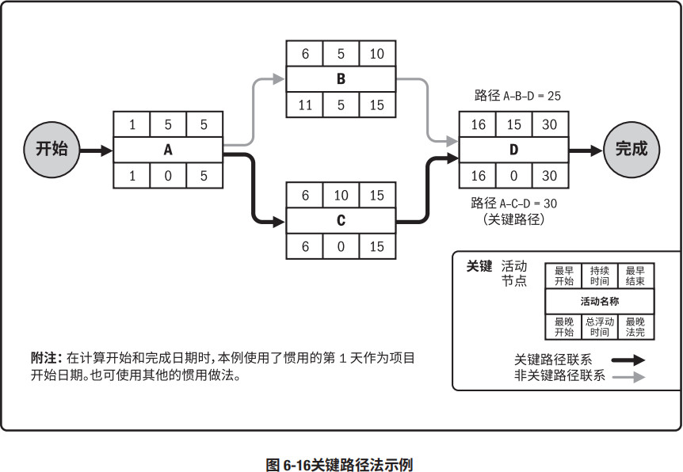
6.5.2.3 资源优化
资源优化用于调整活动的开始和完成日期，以调整计划使用的资源，使其等于或少于可用的资源。资源优化技术是根据资源供需情况，来调整进度模型的技术，包括（但不限于）：
资源平衡
为了在资源需求与资源供给之间取得平衡，根据资源制约因素对开始日期和完成日期进行调整的一种技术。如果共享资源或关键资源只在特定时间可用，数量有限，或被过度分配，如一个资源在同一时段内被分配至两个或多个活动（见图 6-17），就需要进行资源平衡。也可以为保持资源使用量处于均衡水平而进行资源平衡。资源平衡往往导致关键路径改变。而可以用浮动时间平衡资源。因此，在项目进度计划期间，关键路径可能发生变化。
资源平滑
对进度模型中的活动进行调整，从而使项目资源需求不超过预定的资源限制的一种技术。相对于资源平衡而言，资源平滑不会改变项目关键路径，完工日期也不会延迟。也就是说，活动只在其自由和总浮动时间内延迟，但资源平滑技术可能无法实现所有资源的优化。
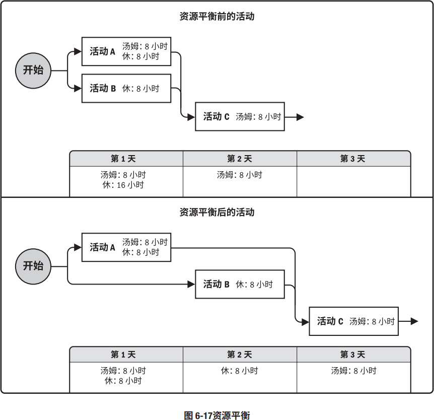
6.5.2.4 数据分析
可用作本过程的数据分析技术包括（但不限于）：
假设情景分析
假设情景分析是对各种情景进行评估，预测它们对项目目标的影响（积极或消极的）。假设情景分析就是对“如果情景 X 出现，情况会怎样？”这样的问题进行分析，即基于已有的进度计划，考虑各种各样的情景。例如，推迟某主要部件的交货日期，延长某设计工作的时间，或加入外部因素（如罢工或许可证申请流程变化等）。可以根据假设情景分析的结果，评估项目进度计划在不同条件下的可行性，以及为应对意外情况的影响而编制进度储备和应对计划。
模拟
模拟是把单个项目风险和不确定性的其他来源模型化的方法，以评估它们对项目目标的潜在影响。最常见的模拟技术是蒙特卡罗分析（见 11.4.2.5 节），它利用风险和其他不确定资源计算整个项目可能的进度结果。模拟包括基于多种不同的活动假设、制约因素、风险、问题或情景，使用概率分布和不确定性的其他表现形式（见 11.4.2.4 节），来计算出多种可能的工作包持续时间。图 6-18 显示了一个项目的概率分布，表明实现特定目标日期（即项目完成日期）的可能性。在这个例子中，项目按时或在目标日期，即 5 月 13 日之前完成的概率是 10%，而在 5 月 28 日之前完成的概率是 90%。
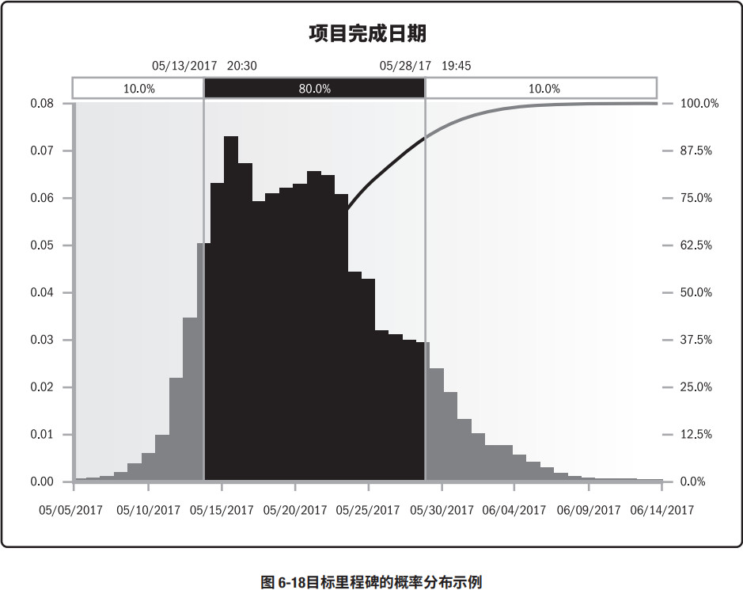
有关蒙特卡洛模拟如何用于进度模型的更多信息，请参见《进度计划实践标准》。
6.5.2.5 提前量和滞后量
见 6.3.2.3 节。提前量和滞后量是网络分析中使用的一种调整方法，通过调整紧后活动的开始时间来编制一份切实可行的进度计划。提前量用于在条件许可的情况下提早开始紧后活动；而滞后量是在某些限制条件下，在紧前和紧后活动之间增加一段不需工作或资源的自然时间。
6.5.2.6 进度压缩
进度压缩技术是指在不缩减项目范围的前提下，缩短或加快进度工期，以满足进度制约因素、强制日期或其他进度目标。负值浮动时间分析是一种有用的技术。关键路径是浮动时间最少的方法。在违反制约因素或强制日期时，总浮动时间可能变成负值。图 6-19 比较了多个进度压缩技术，包括：
赶工
通过增加资源，以最小的成本代价来压缩进度工期的一种技术。赶工的例子包括：批准加班、增加额外资源或支付加急费用，来加快关键路径上的活动。赶工只适用于那些通过增加资源就能缩短持续时间的，且位于关键路径上的活动。但赶工并非总是切实可行的，因它可能导致风险和/或成本的增加。
快速跟进
一种进度压缩技术，将正常情况下按顺序进行的活动或阶段改为至少是部分并行开展。例如，在大楼的建筑图纸尚未全部完成前就开始建地基。快速跟进可能造成返工和风险增加，所以它只适用于能够通过并行活动来缩短关键路径上的项目工期的情况。以防进度加快而使用提前量通常增加相关活动之间的协调工作，并增加质量风险。快速跟进还有可能增加项目成本。
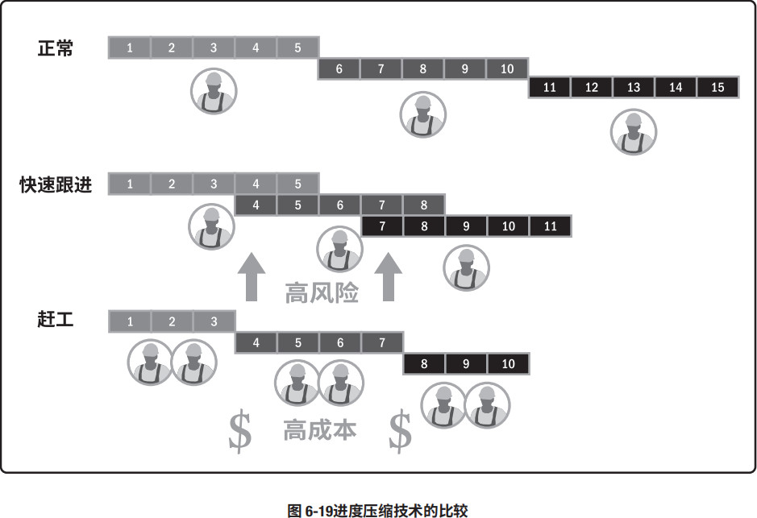
6.5.2.7 项目管理信息系统 (PMIS)
见 4.3.2.2 节。项目管理信息系统包括进度计划软件，这些软件用活动、网络图、资源需求和活动持续时间等作为输入，自动生成开始和完成日期，从而可加快进度计划的编制过程。
6.5.2.8 敏捷发布规划
敏捷发布规划基于项目路线图和产品发展愿景，提供了高度概括的发布进度时间轴（通常是 3 到 6 个月）。同时，敏捷发布规划还确定了发布的迭代或冲刺次数，使产品负责人和团队能够决定需要开发的内容，并基于业务目标、依赖关系和障碍因素确定达到产品放行所需的时间。
对客户而言，产品功能就是价值，因此，该时间轴定义了每次迭代结束时交付的功能，提供了更易于理解的项目进度计划，而这些就是客户真正需要的信息。
图 6-20 展示了产品愿景、产品路线图、发布规划和迭代计划之间的关系。
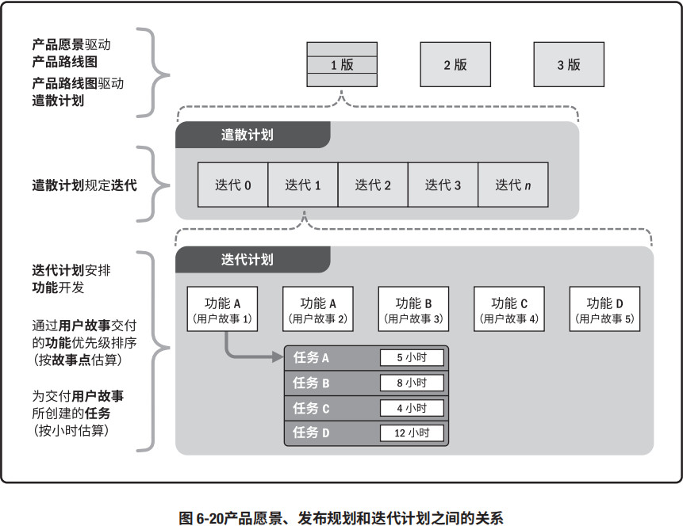
6.5.3 制定进度计划：输出
6.5.3.1 进度基准
进度基准是经过批准的进度模型，只有通过正式的变更控制程序才能进行变更，用作与实际结果进行比较的依据。经相关方接受和批准，进度基准包含基准开始日期和基准结束日期。在监控过程中，将用实际开始和完成日期与批准的基准日期进行比较，以确定是否存在偏差。进度基准是项目管理计划的组成部分。
6.5.3.2 项目进度计划
项目进度计划是进度模型的输出，为各个相互关联的活动标注了计划日期、持续时间、里程碑和所需资源等星系。项目进度计划中至少要包括每个活动的计划开始日期与计划完成日期。即使在早期阶段就进行了资源规划，但在未确认资源分配和计划开始与完成日期之前，项目进度计划都只是初步的。一般要在项目管理计划（见 4.2.3.1 节）编制完成之前进行这些确认。还可以编制一份目标项目进度模型，规定每个活动的目标开始日期与目标完成日期。项目进度计划可以是概括（有时称为主进度计划或里程碑进度计划）或详细的。虽然项目进度计划可用列表形式，但图形方式更常见。可以采用以下一种或多种图形来呈现：
横道图
横道图也称为“甘特图”，是展示进度信息的一种图表方式。在横道图中，纵向列示活动，横向列示日期，用横条表示活动自开始日期至完成日期的持续时间。横道图相对易读，比较常用。它可能会包括浮动时间，也可能不包括，具体取决于受众。为了便于控制，以及与管理层进行沟通，可在里程碑或横跨多个相关联的工作包之间，列出内容更广、更综合的概括性活动，并在横道图报告中显示。见图 6-21 中的“概括性进度计划”部分，它按 WBS 的结构罗列相关活动。
里程碑图
与横道图类似，但仅标示出主要可交付成果和关键外部接口的计划开始或完成日期，见图 6-21 的“里程碑进度计划”部分。
项目进度网络图
这些图形通常用活动节点法绘制，没有时间刻度，纯粹显示活动及其相互关系，有时也称为“纯逻辑图”，如图 6-11 所示。项目进度网络图也可以是包含时间刻度的进度网络图，有时称为“逻辑横道图”，如图 6-21 中的详细进度计划所示。这些图形中有活动日期，通常会同时展示项目网络逻辑和项目关键路径活动等信息。本例子也显示了如何通过一系列相关活动来对每个工作包进行规划。项目进度网络图的另一种呈现形式是“时标逻辑图”，其中包含时间刻度和表示活动持续时间的横条，以及活动之间的逻辑关系。它们用于优化展现活动之间的关系，许多活动都可以按顺序出现在图的同一行中。
图 6-21 是一个正在执行的示例项目的进度计划，工作进展是通过截止日期或状态日期表示的。针对一个简单的项目，图 6-21 给出了进度计划的三种形式：（1）里程碑进度计划，也叫里程碑图；（2）概括性进度计划，也叫横道图；（3）详细进度计划，也叫项目进度关联横道图。图 6-21 还直观地显示出项目进度计划不同详细程度的关系。
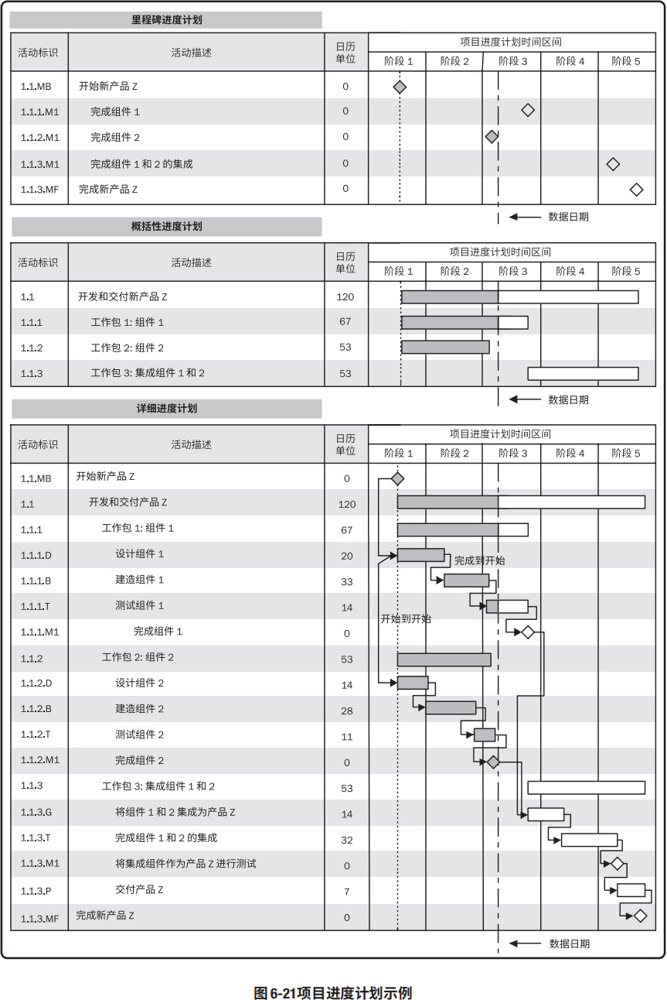
6.5.3.3 进度数据
项目进度模型中的进度数据是用以描述和控制进度计划的信息集合。进度数据至少包括进度里程碑、进度活动、活动属性，以及已知的全部假设条件与制约因素，而所需的其他数据因应用领域而异。经常可用作支持细节的信息包括（但不限于）：
- 按时段计列的资源需求，往往以资源直方图表示；
- 备选的进度计划，如最好情况或最坏情况下的进度计划、经资源平衡或未经资源平衡的进度计划、有强制日期或无强制日期的进度计划；
- 使用的进度储备。
进度数据还可包括资源直方图、现金流预测，以及订购与交付进度安排等其他相关信息。
6.5.3.4 项目日历
在项目日历中规定可以开展进度活动的可用工作日和工作班次，它把可用于开展进度活动的时间段（按天或更小的时间单位）与不可用的时间段区分开来。在一个进度模型中，可能需要采用不止一个项目日历来编制项目进度计划，因为有些活动需要不同的工作时段。因此，可能需要对项目日历进行更新。
6.5.3.5 变更请求
见 4.3.3.4 节。修改项目范围或项目进度计划之后，可能会对范围基准和/或项目管理计划的其他组成部分提出变更请求，应该通过实施整体变更控制过程（见 4.6 节）对变更请求进行审查和处理。预防措施可包括推荐的变更，以消除或降低不利进度偏差的发生概率。
6.5.3.6 项目管理计划更新
项目管理计划的任何变更都以变更请求的形式提出，且通过组织的变更控制过程进行处理。可能需要变更请求的项目管理计划组成部分包括（但不限于）：
- 进度管理计划。见 6.1.3.1 节。可能需要更新进度管理计划，以反映制定和管理进度计划的方式的变更。
- 成本基准。见 7.3.3.1 节。在针对范围、资源或成本估算的变更获得批准后，需要对成本基准做出相应的变更。有时成本偏差太过严重，以至于需要修订成本基准，以便为绩效测量提供现实可行的依据。
6.5.3.7 项目文件更新
可在本过程更新的项目文件包括（但不限于）：
- 活动属性。见 6.2.3.2 节。更新活动属性以反映在制定进度计划过程中所产生的对资源需求和其他相关内容的修改。
- 假设日志。见 4.1.3.2 节。可能需要更新假设日志，以反映创建进度模型时发现的有关持续时间、资源使用、排序或其他信息的假设条件的变更。
- 持续时间估算。见 6.4.3.1 节。资源的数量和可用性以及活动依赖关系可能会引起持续时间估算的变更。如果资源平衡分析改变了资源需求，就可能需要对持续时间估算做出相应的更新。
- 经验教训登记册。见 4.4.3.1 节。在更新经验教训登记册时，可以增加能够有效和高效制定进度模型的技术。
- 资源需求。见 9.2.3.1 节。资源平衡可能对所需资源类型与数量的初步估算产生显著影响。如果资源平衡分析改变了资源需求，就需要对资源需求做出相应的更新。
- 风险登记册。见 11.2.3.1 节。可能需要更新风险登记册，以反映进度假设条件所隐含的机会或威胁。
6.6 控制进度
控制进度是监督项目状态，以更新项目进度和管理进度基准变更的过程。本过程的主要作用是在整个项目期间保持对进度基准的维护，且需要在整个项目期间开展。图 6-22 描述本过程的输入、工具与技术和输出，图 6-23 是本过程的数据流程图。
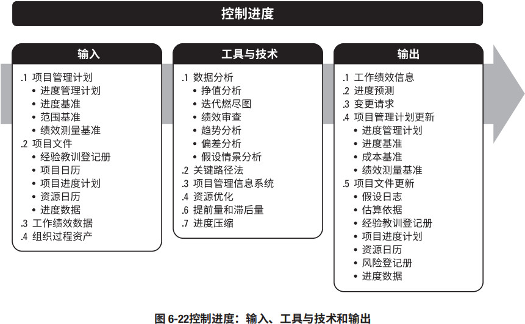
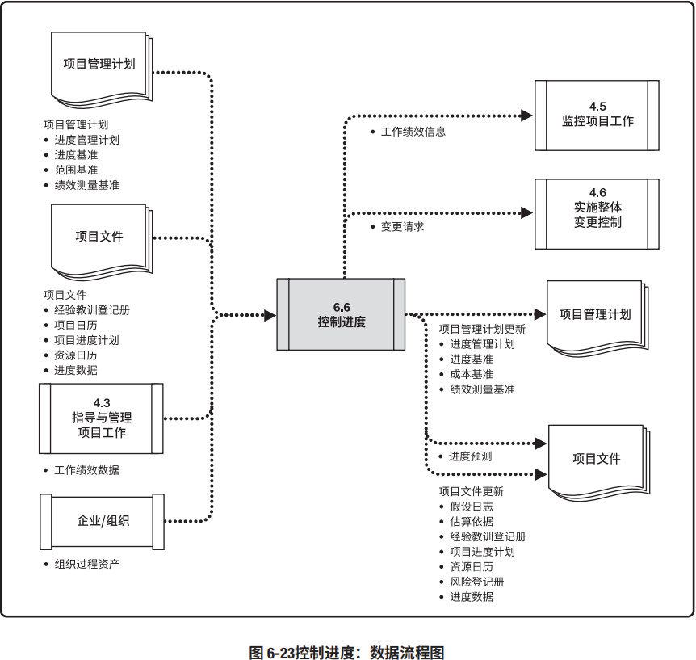
要更新进度模型，就需要了解迄今为止的实际绩效。进度基准的任何变更都必须经过实施整体变更控制过程的审批（见 4.6 节）。控制进度作为实施整体变更控制过程的一部分，关注如下内容：
- 判断项目进度的当前状态；
- 对引起进度变更的因素施加影响；
- 重新考虑必要的进度储备；
- 判断项目进度是否已经发生变更；
- 在变更实际发生时对其进行管理。
如果采用敏捷方法，控制进度要关注如下内容：
- 通过比较上一个时间周期中已交付并验收的工作总量与已完成的工作估算值，来判断项目进度的当前状态；
- 实施回顾性审查（定期审查，记录经验教训），以便纠正与改进过程（如果需要的话）；
- 对剩余工作计划（未完项）重新进行优先级排序；
- 确定每次迭代时间（约定的工作周期持续时间，通常是两周或一个月）内可交付成果的生成、核实和验收的速度；
- 确定项目进度已经发生变更；
- 在变更实际发生时对其进行管理。
将工作外包时，定期向承包商和供应商了解里程碑的状态更新是确保工作按商定进度进行的一种途径，有助于确保进度受控。同时，应执行进度状态评审和巡检，确保承包商报告准确且完整。
6.6.1 控制进度：输入
6.6.1.1 项目管理计划
见 4.2.3.1 节。项目管理计划组件包括（但不限于）：
- 进度管理计划。见 6.1.3.1 节。进度管理计划描述了进度的更新频率、进度储备的使用方式，以及进度的控制方式。
- 进度基准。见 6.5.3.1 节。把进度基准与实际结果相比，以判断是否需要进行变更或采取纠正 或预防措施。
- 范围基准。见 5.4.3.1 节。在监控进度基准时，需明确考虑范围基准中的项目 WBS、可交付成果、制约因素和假设条件。
- 绩效测量基准。见 4.2.3.1 节。使用挣值分析时，将绩效测量基准与实际结果比较，以决定是否有必要进行变更、采取纠正措施或预防措施。
6.6.1.2 项目文件
作为本过程输入的项目文件包括（但不限于）：
- 经验教训登记册。见 4.4.3.1 节。在项目早期获得的经验教训可以运用到后期阶段，以改进进度控制。
- 项目日历。见 6.5.3.4 节。在一个进度模型中，可能需要不止一个项目日历来预测项目进度，因为有些活动需要不同的工作时段。
- 项目进度计划。见 6.5.3.2 节。项目进度计划是最新版本的项目进度计划，其中图示了截至指定日期的更新情况、已完活动和已开始活动。
- 资源日历。见 9.2.1.2 节。资源日历显示了团队和物质资源的可用性。
- 进度数据。见 6.5.3.3 节。在控制进度过程中需要对进度数据进行审查和更新。
6.6.1.3 工作绩效数据
见 4.3.3.2 节。工作绩效数据包含关于项目状态的数据，例如哪些活动已经开始，它们的进展如何（如实际持续时间、剩余持续时间和实际完成百分比），哪些活动已经完成。
6.6.1.4 组织过程资产
能够影响控制进度过程的组织过程资产包括（但不限于）：
- 现有与进度控制有关的正式和非正式的政策、程序和指南；
- 进度控制工具；
- 可用的监督和报告方法。
6.6.2 控制进度：工具与技术
6.6.2.1 数据分析
可用作本过程的数据分析技术包括（但不限于）：
挣值分析
见 7.4.2.2 节。进度绩效测量指标（如进度偏差（SV）和进度绩效指数（SPI））用于评价偏离初始进度基准的程度。
迭代燃尽图
这类图用于追踪迭代未完项中尚待完成的工作。它基于迭代规划（见 6.4.2.8 节）中确定的工作，分析与理想燃尽图的偏差。可使用预测趋势线来预测迭代结束时可能出现的偏差，以及在迭代期间应该采取的合理行动。在燃尽图中，先用对角线表示理想的燃尽情况，再每天画出实际剩余工作，最后基于剩余工作计算出趋势线以预测完成情况。图 6-24 是迭代燃尽图的一个例子。
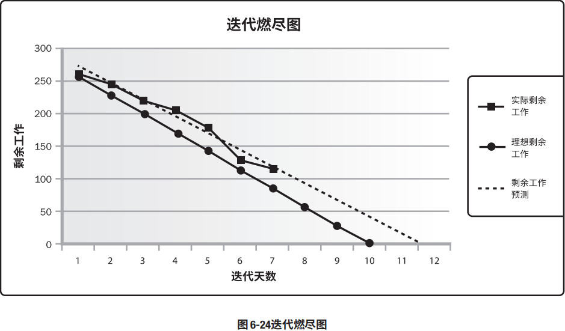
绩效审查
绩效审查是指根据进度基准，测量、对比和分析进度绩效，如实际开始和完成日期、已完成百分比，以及当前工作的剩余持续时间。
趋势分析
见 4.5.2.2 节。趋势分析检查项目绩效随时间的变化情况，以确定绩效是在改善还是在恶化。图形分析技术有助于理解截至目前的绩效，并与未来的绩效目标（表示为完工日期）进行对比。
偏差分析
偏差分析关注实际开始和完成日期与计划的偏离，实际持续时间与计划的差异，以及浮动时间的偏差。它包括确定偏离进度基准（见 6.5.3.1 节）的原因与程度，评估这些偏差对未来工作的影响，以及确定是否需要采取纠正或预防措施。例如，非关键路径上的某个活动发生较长时间的延误，可能不会对整体项目进度产生影响；而某个关键或次关键活动的稍许延误，却可能需要立即采取行动。
假设情景分析
见 6.5.2.4 节。假设情景分析基于项目风险管理过程的输出，对各种不同的情景进行评估，促使进度模型符合项目管理计划和批准的基准。
6.6.2.2 关键路径法
见 6.5.2.2 节。检查关键路径的进展情况有助于确定项目进度状态。关键路径上的偏差将对项目的结束日期产生直接影响。评估次关键路径上的活动的进展情况，有助于识别进度风险。
6.6.2.3 项目管理信息系统 (PMIS)
见 4.3.2.2 节。项目管理信息系统包括进度计划软件。用这种软件对照计划日期跟踪实际日期，对照进度基准报告偏差和进展，以及预测项目进度模型变更的影响。
6.6.2.4 资源优化
见 6.5.2.3 节。资源优化技术是在同时考虑资源可用性和项目时间的情况下，对活动和活动所需资源进行的进度规划。
6.6.2.5 提前量和滞后量
在网络分析中调整提前量与滞后量，设法使进度滞后的项目活动赶上计划。例如，在新办公大楼建设项目中，通过增加活动之间的提前量，把绿化施工调整到大楼外墙装饰完工之前开始；或者，在大型技术文件编写项目中，通过消除或减少滞后量，把草稿编辑工作调整到草稿编写完成之后立即开始。
6.6.2.6 进度压缩
采用进度压缩技术（见 6.5.2.6 节）使进度落后的项目活动赶上计划，可以对剩余工作使用快速跟进或赶工方法。
6.6.3 控制进度：输出
6.6.3.1 工作绩效信息
见 4.5.1.3 节。工作绩效信息包括与进度基准相比较的项目工作执行情况。可以在工作包层级和控制账户层级，计算开始和完成日期的偏差以及持续时间的偏差。对于使用挣值分析的项目，进步偏差 (SV) 和进度绩效指数 (SPI) 将记录在工作绩效报告中（见 4.5.3.1 节）。
6.6.3.2 进度预测
进度更新即进度预测，指根据已有的信息和知识，对项目未来的情况和事件进行的估算或预计。随着项目执行，应该基于工作绩效信息，更新和重新发布预测。这些信息基于项目的过去绩效，并取决于纠正或预防措施所期望的未来绩效，可能包括挣值绩效指数，以及可能在未来对项目造成影响的进度储备信息。
6.6.3.3 变更请求
见 4.3.3.4 节。通过分析进度偏差，审查进展报告、绩效测量结果和项目范围或进度调整情况，可能会对进度基准、范围基准和/或项目管理计划的其他组成部分提出变更请求。应该通过实施整体变更控制过程（见 4.6 节）对变更请求进行审查和处理。预防措施可包括推荐的变更，以消除或降低不利进度偏差的发生概率。
6.6.3.4 项目管理计划更新
项目管理计划的任何变更都以变更请求的形式提出，且通过组织的变更控制过程进行处理。可能需要变更请求的项目管理计划组成部分包括（但不限于）：
- 进度管理计划。见 6.1.3.1 节。可能需要更新进度管理计划，以反映进度管理方法的变更。
- 进度基准。见 6.5.3.1 节。在项目范围、活动资源或活动持续时间估算等方面的变更获得批准后，可能需要对进度基准做相应变更。另外，因进度压缩技术或绩效问题造成变更时，也可能需要更新进度基准。
- 成本基准。见 7.3.3.1 节。在针对范围、资源或成本估算的变更获得批准后，需要对成本基准做出相应的变更。
- 绩效测量基准。见 4.2.3.1 节。在范围、进度绩效或成本估算的变更获得批准后，需要对绩效测量基准做出相应的变更。有时绩效偏差太过严重，需要提出变更请求来修订绩效测量基准，以便为绩效测量提供现实可行的依据。
6.6.3.5 项目文件更新
可在本过程更新的项目文件包括（但不限于）：
- 假设日志。见 4.1.3.2 节。进度绩效可能表明需要修改关于活动排序、持续时间和生产效率的假设条件。
- 估算依据。见 6.4.3.2 节。进度绩效可能表明需要修改持续时间的估算方式。
- 经验教训登记册。见 4.4.3.1 节。更新经验教训登记册，以记录维护进度的有效技术，以及造成偏差的原因和用于应对进度偏差的纠正措施。
- 项目进度计划。把更新后的进度数据代入进度模型，生成更新后的项目进度计划（见 6.5.3.2 节），以反映进度变更并有效管理项目。
- 资源日历。见 9.2.1.2 节。更新资源日历，以反映因资源优化、进度压缩，以及纠正或预防措施而导致的资源日历变更。
- 风险登记册。见 11.2.3.1 节。采用进度压缩技术可能导致风险，也就可能需要更新风险登记册及其中的风险应对计划。
- 进度数据。见 6.5.3.3 节。可能需要重新绘制项目进度网络图，以反映经批准的剩余持续时间和经批准的进度计划修改。有时，项目进度延误非常严重，以至于必须重新预测开始与完成日期，编制新的目标进度计划，才能为指导工作、测量绩效和度量进展提供现实的数据。